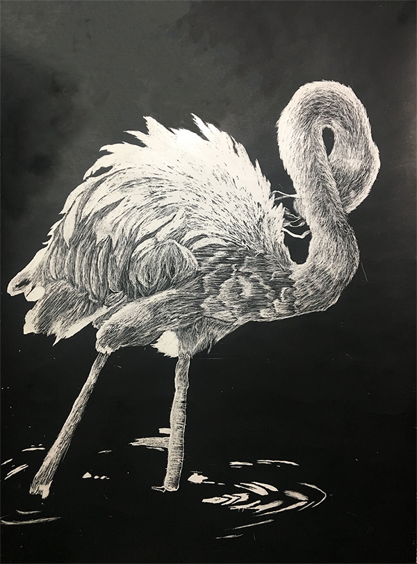

WELCOME TO MY GALLERY
Home
About
Inspirations
Gallery
Here are some of my coding practices from class:
CSS PRACTICE ONE
CSS INTERACTIVE LECTURE
Hierarchy Practice
Box Model Practice
Mid Century Modern Blog
Here are some of my own personal artwork:
